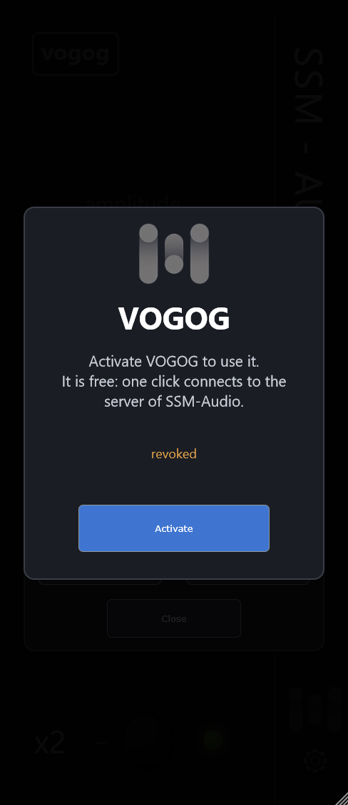

1. About
VOGOG is a free high-pass filter for the low end, made for kicks, bass and any sound where the lowest octave should be tight and clean. It cuts the rumble under the music and, if you want, adds a resonant lift at the corner so that the low end stays punchy. It has no delay (zero latency), works in stereo and has only three controls.
VOGOG is the GOG stage of the full VOGOG chain, taken out into a plugin of its own.
2. Installation
- Close your DAW. Run
VOGOG-…-Setup.exe. The installer putsVOGOG.vst3intoC:\Program Files\Common Files\VST3. - Open your DAW and rescan plugins. VOGOG appears among the VST3 effects (manufacturer SSM-Audio).
- To remove it, use “Apps” in Windows settings. The installer asks whether to delete the settings too.
3. Activation
VOGOG is free, but every computer has to be activated once, over the internet:
- Put the plugin on a track. Until it is activated, the sound passes through unchanged and the window shows a panel.
- Type your e-mail address, and press Activate. The plugin sends the address, a code of your computer (not the hardware id itself), the name of your DAW, the version of the plugin, the operating system and your country to the server of SSM-Audio. Your audio is never sent.
- The panel disappears and the plugin works. The plugin asks the server again at every start and about every 12 hours, so keep the internet on from time to time. A short break does not stop it.

4. Quick start
- Put VOGOG first on the track of a kick or bass.
- Turn frequency until the rumble below the music is gone: the numbers on the scale show the real corner frequency of the filter in Hz.
- Turn amplitude to give the corner more (turn right) or less (turn left) resonance. In the middle the filter is plain; to the right it lifts the frequencies just above the corner.
- If you need to cut more, press x2: the corner frequency doubles.
5. The window

| Control | What it does |
|---|---|
| amplitude | The resonance (Q) of the filter at its corner: from 0 (gentle) to 9 (strong), the middle is the neutral setting. It changes the shape of the corner, not its frequency. |
| frequency | The corner frequency, about 21 Hz (left), 42 Hz (middle) and 62 Hz (right); the scale shows the real value in Hz. |
| x2 | Doubles the corner frequency (the light is green when it is on). |
- Knobs: drag up or down. Hold
Shiftfor fine steps. The mouse wheel works too. A double click returns the knob to its default. - While the mouse is over a knob, its value is shown in place of its name.
- Size: drag the corner at the bottom right to make the window larger or smaller.
- The bypass of your DAW switches the plugin off completely.
6. The gear menu
The gear at the bottom right opens the menu:
- Manual (English / Russian) — opens this manual.
- Video lessons (YouTube) — the channel of SSM-Audio with video lessons.
- Website — the site of SSM-Audio.
- Write to the developer (Telegram) — questions and ideas.
- Check for updates — asks the site for the newest version. A red dot on the gear means that a new version is available.
- Send anonymous statistics — a tick means that the plugin may send anonymous usage statistics (version, DAW, operating system, country, how often it starts; never audio or e-mail). The plugin asks once after the activation; you can change your mind here at any time.
- Activation status... — shows whether the plugin is activated and lets you check with the server right now.
- Interface scale — the size of the window: 75, 100, 125, 150 or 200 %. It is saved with the project.
- About VOGOG — the version and the credits. Click the logo for the same.
From time to time SSM-Audio may show a short message in the window of the plugin (for example about a new version). It is shown once.
7. Notes for the DAW
- VST3, 64-bit, stereo in and out. Zero latency: no delay compensation is needed.
- VOGOG works only in a DAW (REAPER, Cubase, Studio One, Ableton Live, FL Studio, Bitwig, Reason and others). In a test or utility program the sound passes unchanged.
- The settings are saved with your project.
8. Troubleshooting
| Problem | What to do |
|---|---|
| The plugin is not in the list | Rescan plugins in your DAW. Check that VOGOG.vst3 is in C:\Program Files\Common Files\VST3. |
| The sound is unchanged and the panel is shown | Activate the plugin (section 3). |
| “No connection to the server” | Check the internet and the firewall, and press the button again. |
| “Too many attempts” | Wait a few minutes and try again. |
| “This computer cannot activate VOGOG” | The computer was blocked. Write to us (Telegram, see the menu). |
| “Not a known DAW” | VOGOG works only in a DAW. Tell us the name of your program if it is a real DAW. |
9. Legal and privacy
VOGOG is licensed, not sold; see the licence agreement in the installer. The plugin uses the JUCE framework (© Raw Material Software Limited) and TweetNaCl (public domain). VST is a trademark of Steinberg Media Technologies GmbH. The privacy policy of SSM-Audio is on the site (the link “Privacy policy” in the activation panel).